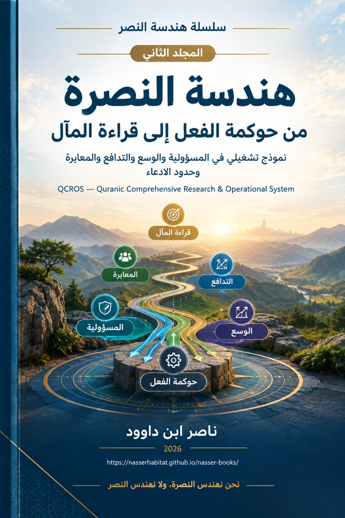

ناصر ابن داوود

نسخة نصية مستخرجة من ملف Word الذي قدمه المؤلف؛ راجع المصدر الأصلي.
جارٍ تجهيز القارئ…
سلسلة هندسة النصر
المجلد الثاني
هندسة النصرة
من حوكمة الفعل إلى قراءة المآل
نموذج تشغيلي في المسؤولية والوسع والتدافع والمعايرة وحدود الادعاء
QCROS — Quranic Comprehensive Research & Operational System
نحن نهندس النصرة، ولا نهندس النصر
ناصر ابن داوود — 2026
بيان السلسلة
تتكون «سلسلة هندسة النصر» من مجلدين متكاملين لا يقوم أحدهما مقام الآخر. المجلد الأول، «QCROS — حوكمة إنتاج المعرفة القرآنية»، يضبط الطريق من القول القرآني إلى الشاهد والملاحظة والفرضية والاختبار والقانون والنموذج. أما هذا المجلد الثاني، «هندسة النصرة — من حوكمة الفعل إلى قراءة المآل»، فيبدأ بعد ذلك: كيف تتحول معرفة منضبطة إلى مسؤولية عملية؟ وكيف نقرأ الواقعة والنتيجة من غير أن نجعل النجاح حجة على الحق أو التعثر حجة على بطلان الأصل؟
ولهذا لا يعيد هذا المجلد تفصيل سلم الأدلة ومصافي G/R/L/S/Q/X/I ومصفوفة القرار كما فعل المجلد الأول؛ بل يستدعيها بوصفها بنية سابقة. وظيفة هذا المجلد هي حوكمة الفعل نفسه: المرجعية، الوعي، الوسع، التوجيه، التنفيذ، التدافع، الواقعة، المآل، المعايرة، وحد الادعاء.
◈ المجلد الأول يسأل: ما الذي يحق لنا أن نقوله؟ والمجلد الثاني يسأل: ما الذي يحق لنا أن نفعله، وما الذي يحق لنا أن نستنتجه بعد الفعل؟
تنبيه اصطلاحي
استعمال لفظ «الهندسة» في هذه السلسلة تنظيمي وتمثيلي؛ فهو لا يحول الوحي أو الغيب أو التوفيق إلى معادلات قابلة للحساب. كما أن لفظ «النصر» في اسم السلسلة لا يعني أن الإنسان يملك إنتاج النتيجة. لذلك يتعمد هذا المجلد استعمال «النصرة» للدلالة على المجال الذي يباشره الإنسان: الهداية في الوجهة، والاستقامة في المسار، والعلم، والوسع، والإعداد، والفعل، والتدافع، والمراجعة.
◈ هندسة الفعل ≠ هندسة النتيجة ≠ هندسة القدر
المحتويات
المقدمة الكبرى: من هندسة النصر إلى هندسة المسؤولية
الباب الأول: من حوكمة المعرفة إلى حوكمة الفعل
الفصل الأول: الدستور التشغيلي للمجلد الثاني
الباب الثاني: المرجعية والوعي البشري
الفصل الثاني: N01 — المرجعية النصية وحدود تحويلها إلى نموذج
الفصل الثالث: N02 — الوعي والتوصيف البشري للواقع
الباب الثالث: هندسة الوسع والتوجيه والتنفيذ
الفصل الرابع: N03-N06 — من الممكن إلى الفعل تحت التدافع
الباب الرابع: الواقعة والمآل والمعايرة
الفصل الخامس: N08 — بوابة الواقعة المشهودة
الفصل السادس: N09 — المآل: ما الذي تغير فعلاً؟
الفصل السابع: N07 — التصحيح والمعايرة
الباب الخامس: حد الادعاء
الفصل الثامن: N13 — الحارس الإبستمولوجي
الباب السادس: مختبر الضغط
الفصل التاسع: منهجية مختبر الضغط
الفصل العاشر: الاختبارات T01-T04
الباب السابع: مصفوفة الفشل والتدقيق والاعتماد
الفصل الحادي عشر: F0-F8 وتشخيص موضع الفشل
الفصل الثاني عشر: G1-G7 ومستويات النضج L0-L4
الباب الثامن: حدود QCROS وميثاق عدم التوسع
الفصل الثالث عشر: أين تنتهي سلطة النموذج؟
الباب التاسع: من قراءة السنن إلى هندسة النصرة
الفصل الرابع عشر: الهداية والاستقامة والعلم والعمران